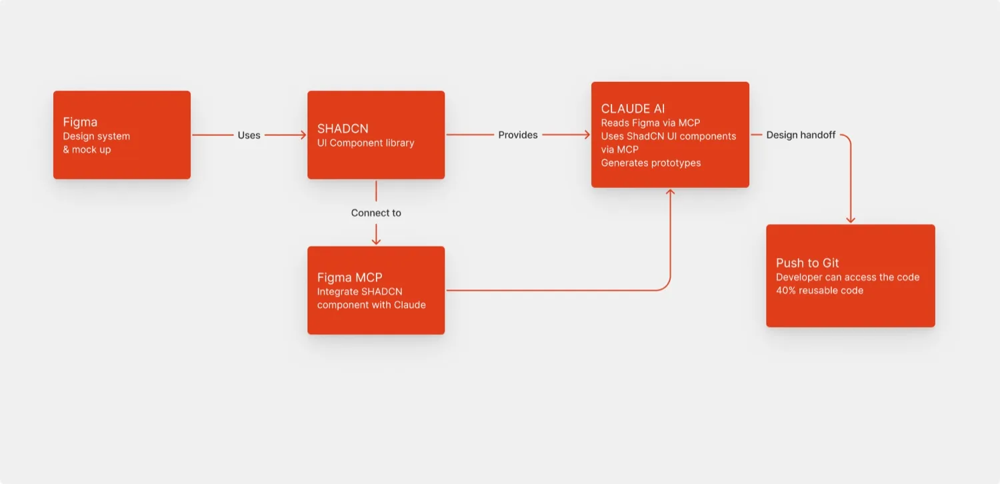
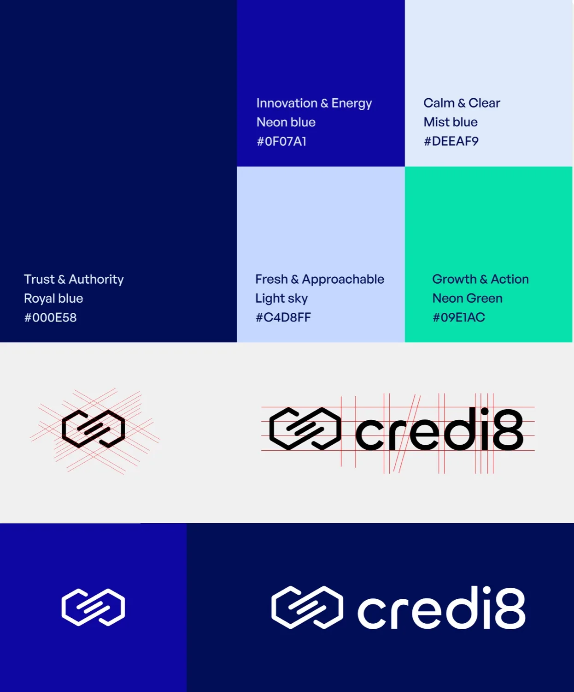
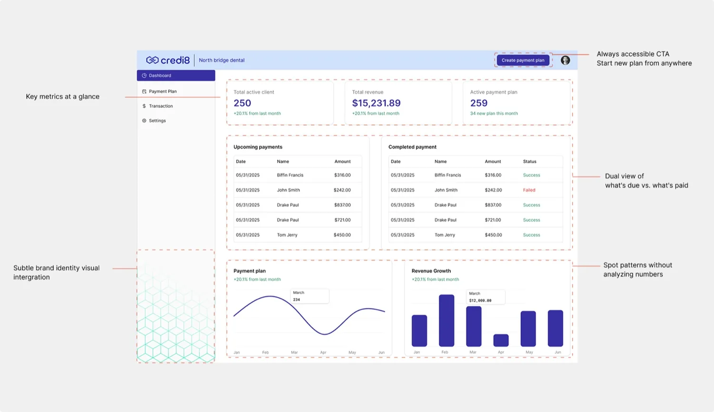
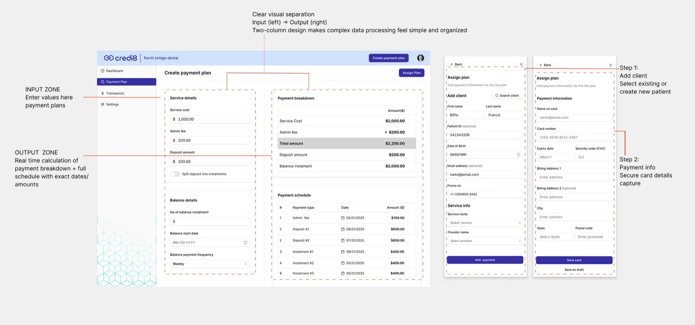
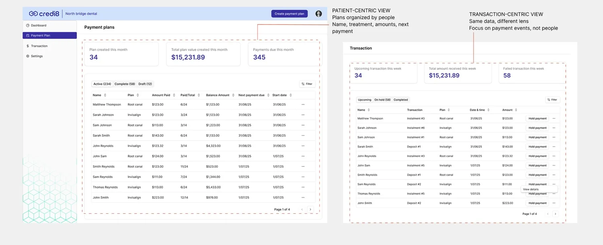
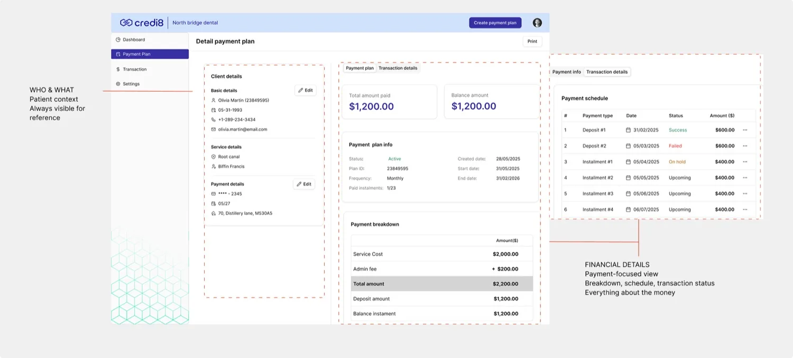

Credi8 — Dental Payments Platform
Product Design + Brand · 2025–Present
Credi8 helps dental clinics offer flexible, transparent instalment plans — making care more accessible. I joined as the solo designer to redesign the entire web application and build the brand from scratch.
Project overview
When I joined in October 2025, the project was already behind schedule. The founders weren't satisfied with the previous agency's user experience, and the engineering team was blocked, waiting on designs.
I treated the payment calculator as the make-or-break feature and built outward from it, while integrating AI into my workflow for rapid iteration. A staged plan kept developers unblocked the whole way:
- Unblock development — delivered foundational screens (login, signup) immediately so devs could start while I designed complex features.
- Validate the core flow — tested the payment calculator with users via AI prototyping, refining through multiple versions.
- Expand & deliver — designed Dashboard, Transactions, and Settings around the validated core, handing off progressively.
- Strategic tooling — chose ShadCN components for AI-prototyping compatibility and developer-ready output — 40% faster design-to-code.
I observed clinic workflows and studied financial UIs before drawing a single screen. I mapped three distinct user types — Staff (admin), Providers (dentists), and Clinic owners — each with different goals.
Key insight: staff had low technical comfort, so the payment calculator had to be error-proof and dead simple. It would make or break the entire experience.
Figma held the design system and mockups; Claude read Figma via MCP and generated prototypes using ShadCN UI components, which were pushed to Git for developers — yielding roughly 40% reusable production code and a tight design-to-development loop.

Credi8 had no visual identity — just a name and a vision. I created the complete system: a hexagon motif, logo, type pairing (Inter for clarity, Playfair Display for elegance), and a blue-led palette signalling trust, innovation, and approachability.

The impact
Product walkthrough



